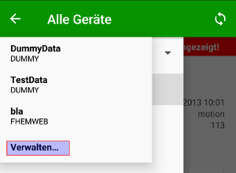
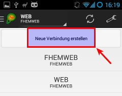
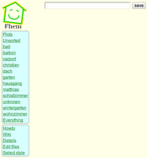
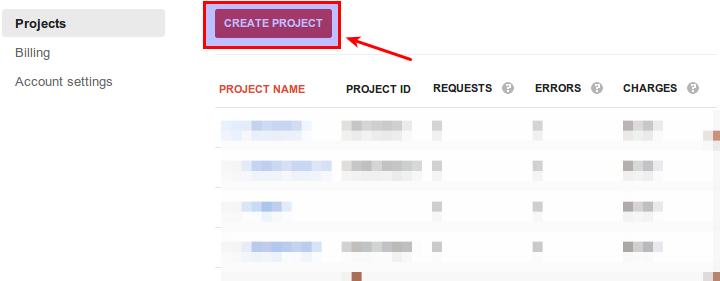
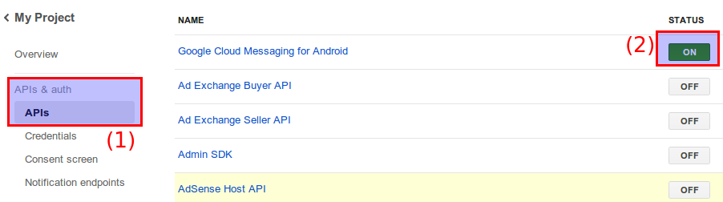
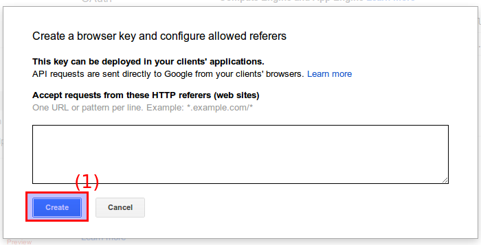
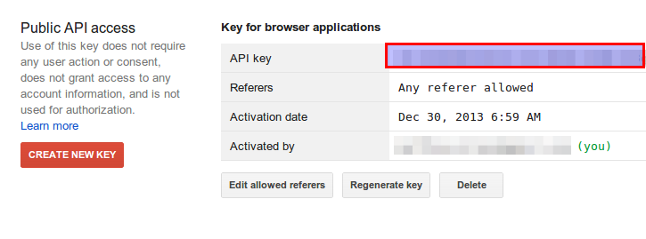
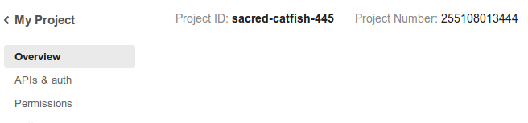
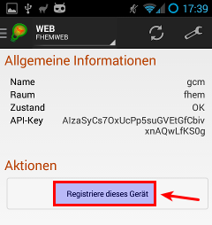

Installation
Configuring Connections
(up)
When starting andFHEM the first time some dummy data is used for previewing what the application looks like and what devices are supported. To use your own FHEM server click on the selector in the action bar. This selector always contains the name of the connection that is currently used for pulling data from a FHEM server.

After clicking the selector a submenu opens. This submenu contains all configured connections. When clicking a connection name, the current connection used for pulling information from FHEM changes to that new one. When selecting the bottom item, which is called "Manage" or "Verwalten", you are directed to a view where you can manage your connections.

All the configured connections are listed here. When clicking such a connection, you can edit all configured connection items like URL, username or password. When clicking "Create a new connection" or "Neue Verbindung erstellen", you can create a new one.
Changing a configuration or adding a new one always looks the same, except that you cannot change the connection type when editing a connection.
Enter your credentials and click "Save" or "Speichern". When leaving the configuration view with the back key and reentering the collection list selector, you can select your newly created connection.
FHEMWEB
(up)
FHEM supports some web interfaces delivered together with the server itself. One of these web interfaces is FHEMWEB, which is configured by adding a line like define fhemweb FHEMWEB 8083 global to your fhem.cfg. Before any data within andFHEM, make sure that you can access the web interface in a browser, either on your smartphone or on another computer. You should see a web page like the following:

The same address you just entered is expected by andFHEM in the URL field within the FHEMWEB preferences. Trailing slashes do not matter. The username and password fields can be filled optionally. They are required if you want to authenticate yourself using basic authentication. If you do not know what this means, stop reading here and leave the fields empty.
If you want to use the authentication feature you have to make sure that your fhem.cfg contains a line like attr fhemweb basicAuth aj38219cnake. For information how to create the string after basicAuth, continue reading here. Now just enter your username and password in andFHEM.
Telnet
(up)
FHEM supports a very basic command line interface to query the current state of devices. Before selecting this option, make sure that you can access the interface from another computer in your local network.
When using Windows, download Putty and start the program. Select telnet as connection option, enter the address of your FHEM server and add the specified port in your FHEM configuration. The port defaults to 7072. When clicking hitting the button to open the connection, a black window opens up. Hit two times enter to see the FHEM prompt showing up. If this works, andFHEM is also able to connect to FHEM.
If not, make sure that your fhem.cfg contains a line such as the following: attr global port 7072 global. 7072 is the port used for opening up the command line interface. Global specifies that computers can connect to the server without connecting from the computer running the FHEM server.
When the above connection is successful you can enter the configuration data in andFHEM in the appropriate fields. The IP field should contain something like 192.168.0.1. It is the address of the computer running the FHEM server. Port is the above mentioned FHEM command line interface port, such as 7072.
Google Cloud Messaging
(up)
Google Cloud Messaging (GCM) enables you to send push notifications to Android handsets. This enables you to send updates in nearly realtime to andFHEM (from 2.4.2 onwards).
Installation Steps:
- Download and install the 98_gcmsend.pm module for FHEM (copy the file to the FHEM directory, make sure that your Perl installation meets all the dependencies. FHEM will tell you if it can load the module, especially when issuing reload 98_gcmsend. You can also copy the file from the contrib directory. If doing so, don't forget to modify the file permissions of 98_gcmsend.pm (the user running FHEM has to be able to read the file, so change the owner using chown fhem 98_gcmsend.pm or give all users the permission to read the file using chmod a+r 98_gcmsend.pm)
The module depends on two perl modules, which have to be installed to fhem/lib/perl5/site_perl/5.12.2/ (on FritzBoxes, otherwise choose your perl directory)
- LWP::Protocol::https (download from here)
- Mozilla::CA (download from here)

- Create a Google GCM Account.
- Go to https://code.google.com/apis/console/ and create a new API project.

- Enter your newly created project and enable "Google Cloud Messaging for Android" under "APIs & auth" > "Api"

- Jump to the submenu "Credentials", click "Create new key" and hit "Browser key" in the window that now pops up.

- A new window pops up to enter some URL restriction. Be careful what you enter here, as this may break your GCM messages. If you are unsure on what to enter here, leave the field empty.

- Finally the credentials page contains the information we want: the mystic API key.

- Another information we need is the so called "project number". This one is automatically generated by Google for each project. We can find that one within the "Overview" page:

- Now we create a GCM device. Issue define <gcm_device_name> gcmsend within your FHEM instance.
- Afterwards we need to configure the device to talk to GCM. This is why we have to issue another FHEM command:
attr <gcm_device_name> apiKey <apiKey>
whereas <gcm_device_name> is the name of the device you created before and <apikey> is the key you just created within the Google console (number 2 within the image).
- Link andFHEM
- Enter the andFHEM settings and enter the GCM project number (from the Google console page in section "Overview") within the field "GCM Project Number".
- Refresh your xmllist and look for your GCMSend device you just created. Open the detail page and click the button to register your device. Internally, andFHEM will add your device as regIds attribute of your gcm device.

{kind=link}
{kind=link}
{kind=link}
{kind=link}
{kind=link}
{kind=link}
{kind=link}
{kind=link}
{kind=link}
{kind=link}